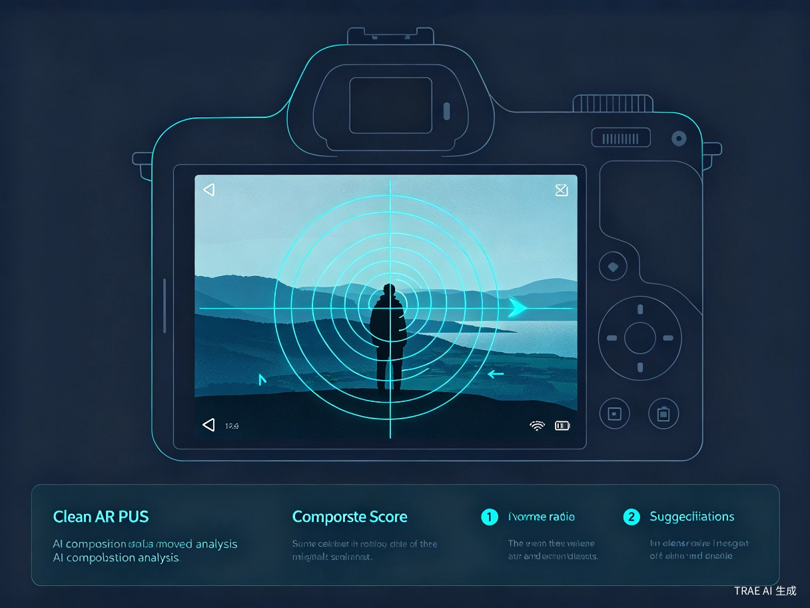
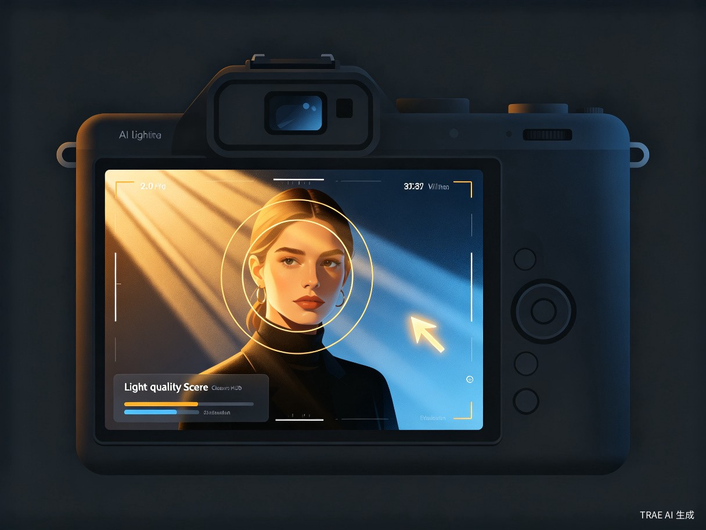
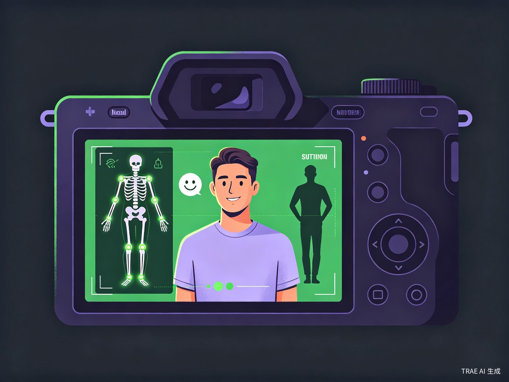
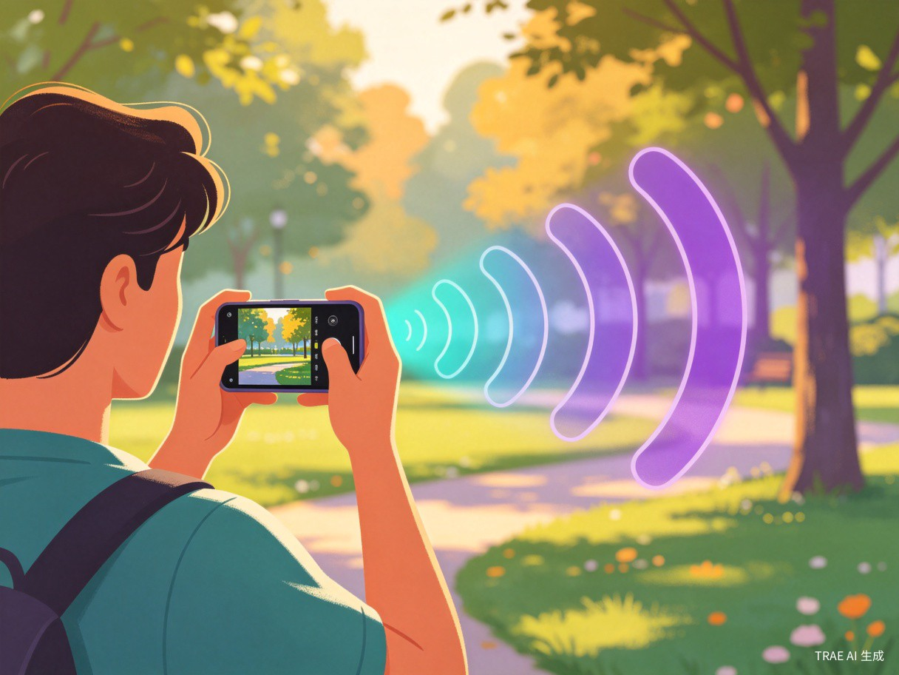

AI 摄影导师通过端侧视觉大模型实时分析取景画面，从构图、光线、姿态、表情等维度给出语音与 AR 视觉引导，帮助普通用户告别"盲拍"，轻松出片。
每次拍照都要连拍十几张，挑来挑去才勉强选出一张能发的？这些痛点，你一定不陌生。
拍完才发现主体偏离画面中心、背景杂乱无章，好风景被糟糕的构图毁了。
逆光过曝、暗光模糊，等反应过来调整时，最佳拍摄时机早已过去。
一面对镜头就僵硬，表情不自然，拍出来总像在"罚站"。
拍不出好照片只能靠滤镜硬撑，修图半小时只为发一条朋友圈。
要么拍十几张挑一张，要么错过转瞬即逝的精彩瞬间。
端侧多模态视觉大模型实时分析画面，覆盖摄影全流程的关键决策点。
基于三分法、黄金比例、引导线等专业构图规则，实时评估画面布局，通过 AR 叠加层直观展示构图建议。

实时检测光源方向、强度与色温，识别逆光、过曝、暗光等不利条件，给出最佳拍摄时机与补光建议。

通过人体姿态估计与表情识别，检测人物僵硬程度，提供自然的摆姿建议与表情引导，让每个人都拍出松弛感。

解放双眼与双手，AI 建议通过自然语音实时播报，同时 AR 叠加层在取景器上直接标注调整方向，所见即所得。

打开 App 到拍出好照片，只需四步，全程 AI 陪伴。
启动 AI Photo Mentor，授权摄像头，进入智能拍摄模式
→端侧视觉大模型逐帧分析构图、光线、姿态等维度
→根据语音和 AR 提示调整站位、角度、表情与时机
→AI 确认画面达标后提示拍摄，一次成片，告别废片
无论是旅行打卡、家庭聚会还是内容创作，AI 摄影导师都是你的随身摄影教练。
景点合影不再靠运气，AI 帮你找到最佳角度与光线
生日派对、毕业照，每个人都能拍出自然好看的照片
给孩子、宠物抓拍动态瞬间，不错过任何成长记录
情侣合照、闺蜜自拍，告别僵硬表情，拍出甜蜜氛围
小红书、抖音创作者的拍摄利器，提升内容视觉质量
毛孩子不会配合？AI 帮你预判最佳抓拍时机
不只是拍照工具，更是摄影民主化的推动者。
从"凭感觉 + 反复试拍"升级为"AI 实时指导 + 一次成片"，节省时间与存储空间。
C 端订阅制、硬件合作、内容增值、社交裂变，构建可持续的商业模式。
降低摄影学习门槛，让每个人都能轻松记录生活中的美好瞬间。
多元化收入结构，覆盖从工具到内容到生态的完整链路。
基础功能免费，专业构图模板、滤镜商城、AI 一键修图等进阶功能订阅收费。
与手机厂商联合调优相机，与摄影器材品牌联合营销。
付费摄影课程、社群运营、达人分成，打造摄影学习生态。
好照片天然适合分享传播，UGC 内容反哺获客，实现自增长。
下方是 App 的功能预览。点击下方按钮打开完整的可交互 Demo —— 使用你的摄像头实时取景分析。